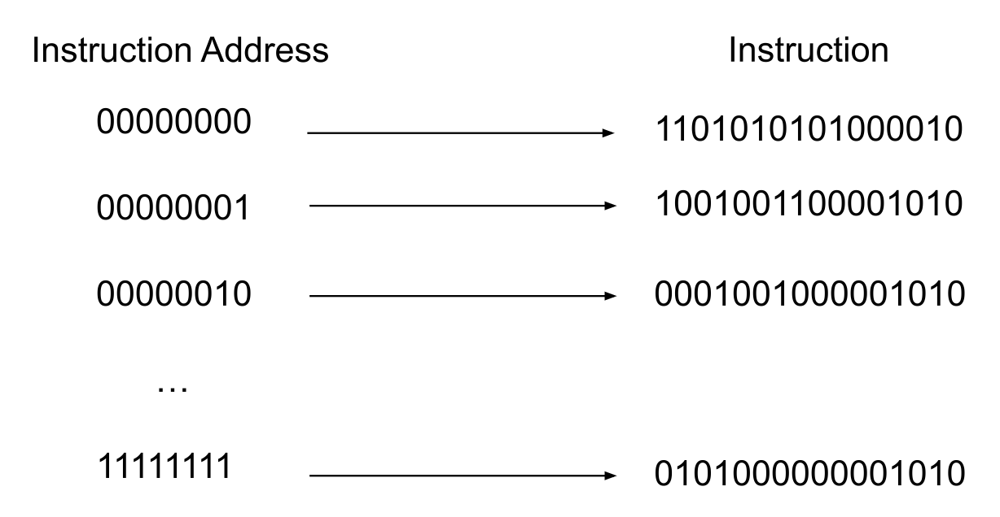
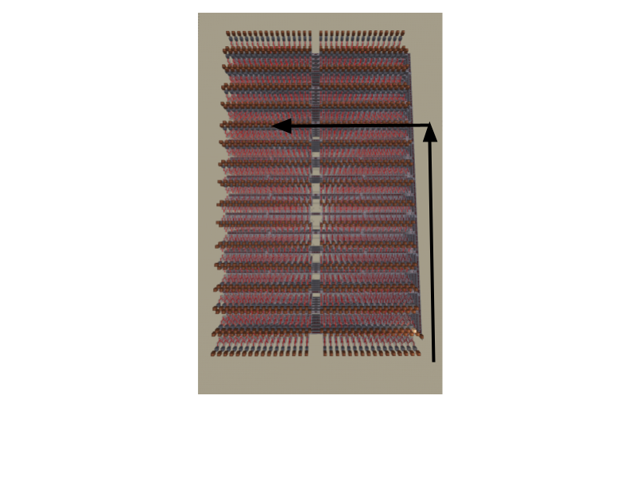
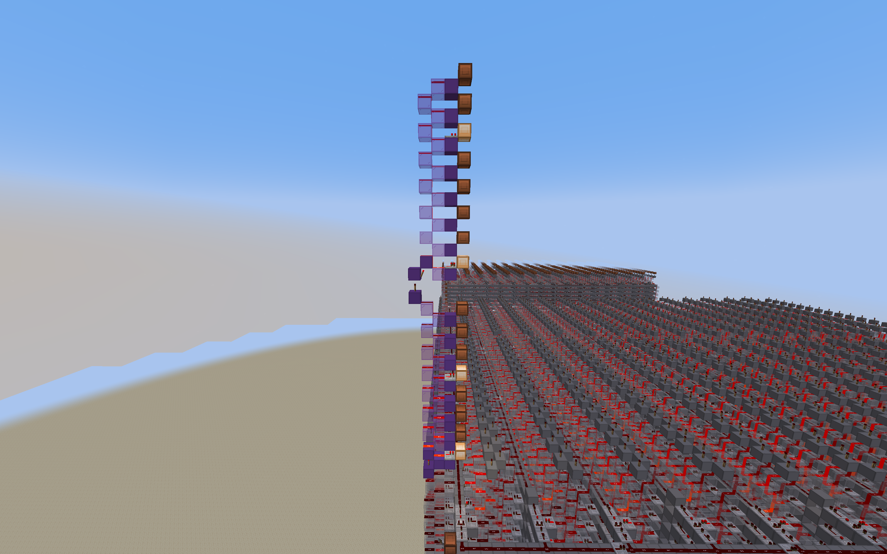

How It Works
Number of Addresses
We want to be able to come up with some memory device to keep hold of all the instructions. The big question is: how many instructions should we have?
Note that we can use a decoder to pick an address from binary. However, the number of instructions grows exponentially (2n). For ease of use, we decide to conduct this class with 28 (256) different instructions. So now we need to build an 8-bit decoder.
Please pay attention to the difference between instruction address and the instruction itself. The instruction address refers to the location of the instruction in our memory, while the instruction is the 0s and 1s needed to set all the inputs correctly for our control ROM. The decoder we are making is to select a specific address (e.g., 00000001). That address then provides us some instruction.
Design
There are numerous designs for an 8-bit decoder. You can build a decoder in one direction.

However, the more bits, the longer it takes for the signal to propagate due to repeaters. There are many designs that can be used, but we will provide you a schema for an efficient one. If you would like to dig deeper on how it works, you can visit this video or ask one of us. Essentially, if all instructions are laid out in a grid, you can optimize your search based on the multiple of the decimal conversion of an instruction address (e.g., One row may contain addresses that are multiples of 8 bits).
Note that when you select a specific address of an instruction, that signal can be used in conjunction with a glass tower to carefully craft a specific INSTRUCTION. The following is an example of setting one instruction at address 0. The Redstone lamps indicate a 0 (off) or 1 (on). In our schematic we provide you, those signals will then be sent to some central output, from which you can wire from (not pictured).
Wiring
Once you have created your instruction memory, all you need to do is wire parts of instructions to the correct inputs. For example, the first four bits in our language are the opcode. So those Redstone signals would need to be sent in order to the control ROM. Wiring can be really tedious, but it should honestly be the easiest to conceptually understand. It is like performing some operation, and all you are doing is setting the inputs correctly. Please refer to the Redstone chapter if you need help wiring.